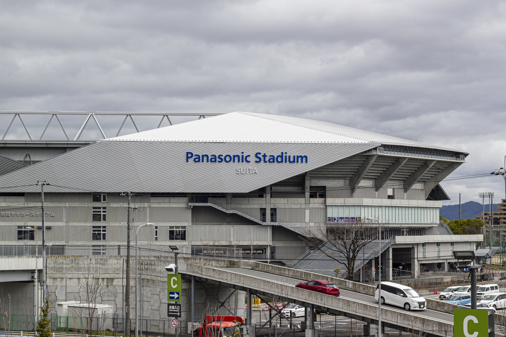
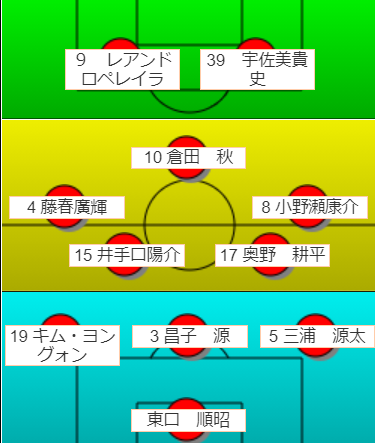
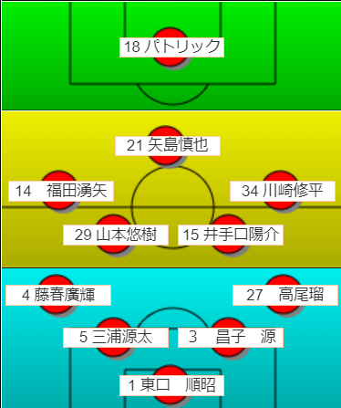
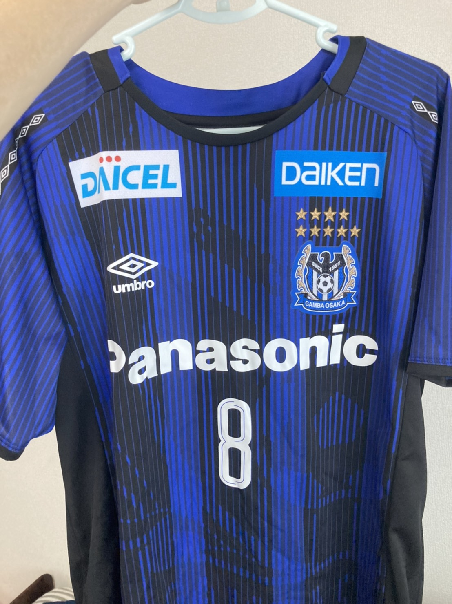
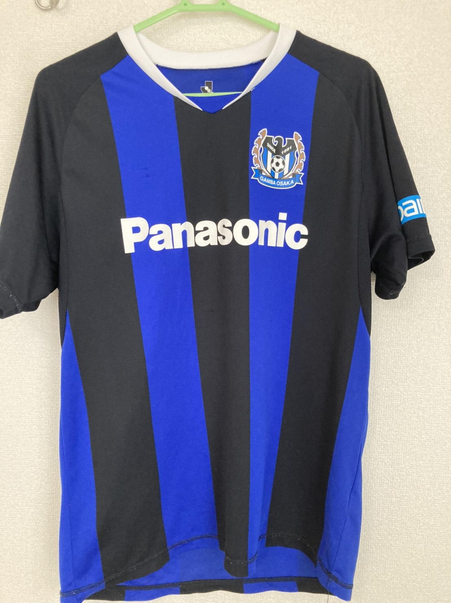

ガンバ大阪の概要
- 大阪を拠点とするプロサッカークラブ
- ガンバは日本語の「頑張る」とイタリア語の「脚」に由来する
- ホームスタジアム：パナソニックスタジアム吹田
- 監督：松波正信
- ライバルクラブ
- セレッソ大阪（大阪ダービー）
- 浦和レッズ（ナショナルダービー）
- マスコット:ガンバボーイ
- 歴史
- Jリーグ開幕時より加盟している10クラブ（オリジナル10）のひとつ
- 2005年に初タイトルとなるJ1リーグ優勝
- 2008年にAFCチャンピオンズリーグ制覇
- 2014年に国内三冠達成
- 主な過去の在籍選手
- 永島昭浩(元めざましキャスターの永島優美の父)
- エムボマ(1997年Jリーグ得点王)
- 大黒将志（2014年日本人最多となる20得点)
- アラウージョ（2005年リーグ戦33得点は同年世界第1位）
- 稲本潤一（日本のW杯初勝の決勝ゴール）
- 宮本恒靖(2005年優勝時・ジーコJAPANの主将)
- 遠藤保仁（Master Of GAMBA)
- 堂安律(AFC U-19選手権MVP)

※パナソニックスタジアム吹田の様子
GAMBAとCEREZOの比較
※注意事項※
あくまでも個人の意見です
このチャートに関する苦情は一切受け付けません
選手紹介
- GK
- 1 東口順昭
- 22 一森純
- 23 林瑞樹
- 25 石川慧
- 31 加藤大地
- DF
- 3 昌子源
- 4 藤春廣輝
- 5 三浦源太
- 13 菅沼駿哉
- 16 佐藤耀太
- 19 キムヨングォン
- 24 黒川圭介
- 27 高尾瑠
- 40 シンウォノ
- MF
- 6 チュセジョン
- 8 小野瀬康介
- 10 倉田秋
- 14 福田湧矢
- 15 井手口陽介
- 17 奥野耕平
- 21 矢島慎也
- 28 ウェリントンシウバ
- 29 山本悠樹
- FW
- 9 レアンドロペレイラ
- 11 小野裕二
- 18 パトリック
- 20 一美和成
- 30 塚本大
- 32 チアゴアウベス
- 33 臼井陽斗
- 34 川崎修平
- 39 宇佐美貴史

2021予想フォーメーション1

2021予想フォーメーション2
皆さんもぜひ予想フォーメーションを作ってみてね。
作った画像ファイルをページの最後にあるフォームから送ってくれると嬉しいです
2021シーズン：ユニフォーム
HOME・AWAY・ACLの3種類展開
著作権の関係でユニフォームの画像は
下記リンクからご確認ください。


こちらの写真は
2020のホームユニホーム(オーセンティック）
2014年ホームユニフォーム（レプリカ）
（8番が2020のモデル / サイト作成者の私物）
各種値段
| ホーム | アウェイ | ACL | |
|---|---|---|---|
| オーセンティック | 26,400 | 取り扱いなし | |
| レプリカ | 14,300 | 15,400 | |
| ジュニア | 12,000 | 取り扱いなし | |
各サイズ
| サイズ | SS-S | M-L | O-XO | XA-XB |
|---|---|---|---|---|
| 身長(cm) | 160～165 | 170～175 | 180～185 | 190～195 |
| 着丈(cm) | 68 | 71 | 74 | 77 |
※注意事項※
値段は線番号ナシを想定しています。１桁は＋3740・2桁は+4400かかります
実際の商品の色と異なって見える場合がございます。そのため店頭での購入をオススメします。
より詳しい情報は下記に記載のオンラインshopでお確かめください
ガンバ大阪クイズ！
例題 ガンバ大阪に在籍したことがない選手は以下の４人のうち誰？
アデミウソン・ルーカス・バレー・メッシ